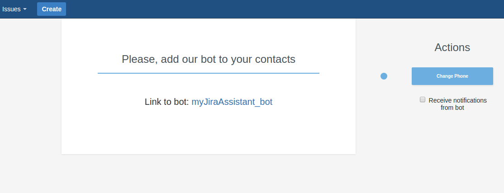
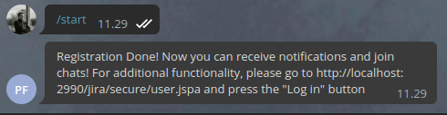
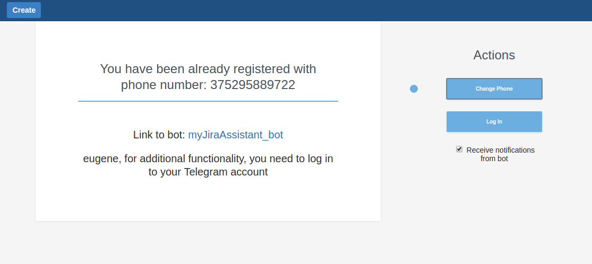
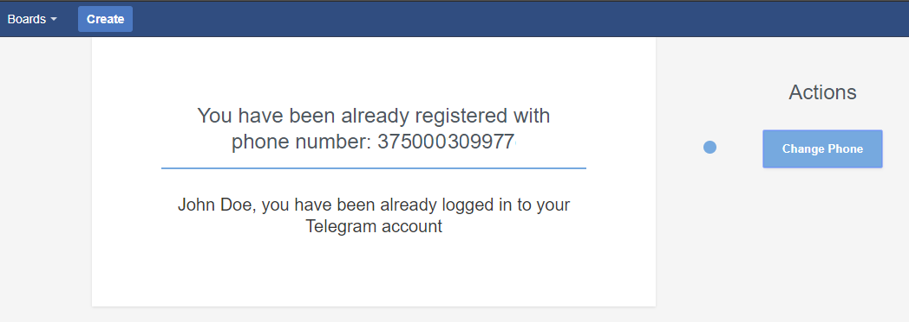

User guide. Part I. Registration
If plugin is properly configured by your JIRA Administrator, let's start!
Follow the next steps for registration in Telegram Integration For JIRA
Note:The following steps assume that you already have a Telegram account.
If not, please, download Telegram application and follow its registration guide.
-
Open the "Profile dropdown" in the top right corner of any JIRA page. Click on the "Telegram"
option.

-
Enter phone number, associated with your Telegram account in the "phone" field and click the "Authenticate"
button.
-
Go to your telegram account
You need to start a conversation with bot.

After pressing /start you can refresh profile page in JIRA and you'll see the following:
 Receive notifications from bot checkbox allows you to enable and disable direct notifications from bot.
Receive notifications from bot checkbox allows you to enable and disable direct notifications from bot.
-
Registration done! On Telegram you'll see confirmation message from JIRA Bot.
Now the bot will be able to send you a notification about changing the status of tasks.
You'll see a new message from your JIRA Administrator with activation link.

Other users can add you to chats, you can see the list of chats related to the project on project page.
-
But, unfortunately, you can't create chats and add users to them. Let's log in to the Telegram to fix this!
Refresh your telegram registration page or follow again: Profile → Telegram ( Step 1).
You'll see the following:

-
Click the "Log In" button. You will receive a message from Telegram with login code:
m

Enter the code from this message in the "Code" field. Do not forward this message or send this code by Telegram, otherwise it will be expired.
Also, if you enabled Two-Factor authentication in your Telegram account, you need to enter your password too.
Press the "Check code" button.
-
That's all, Registration done!

Check the second part of this guide to know how to create and manage chats!